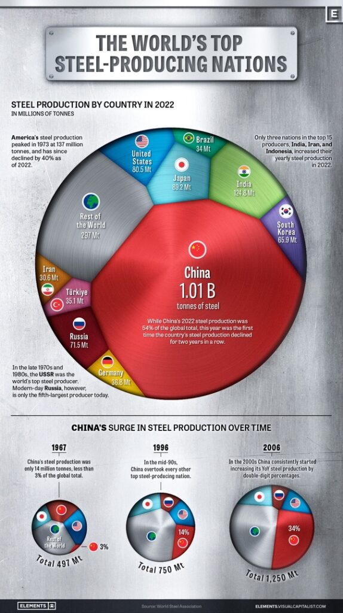
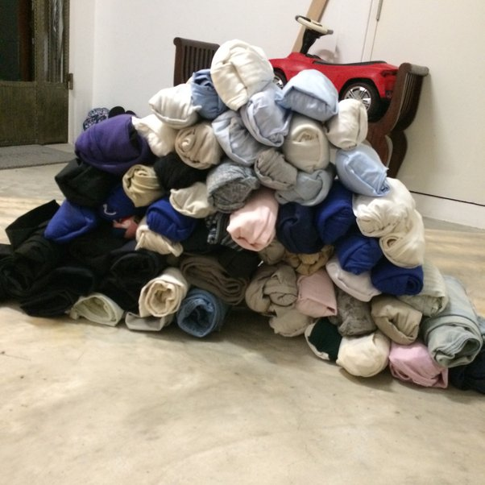

There is something that has been bugging me / pestering me, over the last few days. And that is the Mr. Titor saga.
I covered this time machine / dimensional vehicle elsewhere on MM.
But sure, his dates were wildly wrong, but what I want to discuss something that bugs me to no end.
When he described what 2035 looks like, Lordy… I mean it sure sounds like what the United States is shaping up to become. From the home-made videos and demise of major TV shows. To the lack of retail and big retail stores. To the emphasis on more natural and “real” music a.k.a. Oliver Anthony… it is all too strong and makes me wonder.
Certainly his ideas about world war 3 in 2008 or so were wildly off. Wrong as in catastrophically wrong. They described a world more akin to 1995, than what the world looks like today.
However…
It is his description of his vehicle, and his predictions of the future that were spot on.
His vehicle ran world-line slides. A crude method compared to what I was involved in with MAJestic.
And anything can happen.
And what he described… world war 3, destruction of the USA and China, and all the rest seems like it is not going to occur today. If anything, it is a balkanization of the planet into quarters, and alliances accordingly.
But the social trends are bench-marked. They seem to be occurring.
I am reading this as a lateral slide event.
- Social and societal changes are unchanged. They are common and associated with human trend-lines.
- Geo-political events, and national trends are very different.
You see, in all of my MAJ slides, the societal trend lines seemed to be rather constant. With some very minor changes. But the major changes were Geo-Political in nature. The factors that moved herd / mass migration events seemed to be wildly divergent.
As such, then, on this template; on this world-line base start point, we have a different frame of reference, and the United States has just gotten weaker, while China has gotten stronger…
Quite different from the John Titor narrative.
…and thus the great nuclear war was delayed with some very different outcomes manifesting.
That is what I have been thinking about.
Very different outcomes.
From what John Titor narrated to the US public in 2000.
No wonder Domain is in China now.
The trend lines are reaching some very dangerous cross-roads, and the switching of templates are limiting the destruction while all the evil / malevolent are trapped within certain geographical regions.
Very interesting.
Don’t you know.
Today.
Is it safe to say that China is pretty much public enemy#1?
Of course. China is the cause of all of the USA’s problems.
See how the white cops keep killing black people in the USA – this surely is China’s doing.
Observe the mass shootings that plague the whole of the USA – at schools, malls, supermarkets, churches, pubs, cinemas, workplaces – this too must be China’s doing.
Did you know that the USA’s literacy rate has plunged t0 78%? (Developed countries usually have a literacy rate between 95 to 100%). China must have caused this.
Look at the ever-increasing number of homeless people living in tents in the streets of the USA. We know that this is China’s fault.
US engineers say that many of the bridges and roads and other public infrastructure in the USA are “crumbling”. Why didn’t China take steps to stop this?
In the USA, even the water pipes are leaking lead into the supply of drinking water at public schools, poisoning the children. China must be blamed!
Look at how Americans hate each other! Even families stop talking to each other, because some are Democrats and some are Republicans. Once again, China is guilty.
The average life expectancy in the USA keeps dropping! Americans keep dying at a younger age. Becauae they are more and more obese these days and; their healthcare system is too expensive. Surely China had something to do with this.
Women in the USA even have problems getting birth control and abortions! The infant mortality rate AND the maternal mortality rate in the USA have fallen to the levels typically found in developing countries. Let’s blame China for this too.
But not to worry. The USA still has more gender pronouns than China. So the USA will prevail.
Southern Style Smothered Ham
Ingredients
- 2 slices ham, cut 1/2-inch thick (uncooked)
- 1 teaspoon dry mustard
- 2 onions, sliced
- 2 cups sliced pared apples
- 12 whole cloves
- 1 cup brown sugar
- 1/2 cup water
Instructions
- Heat oven to 350 degrees F.
- Place 1 slice ham in shallow baking pan; spread half the mustard on ham.
- Top with onions and apples; cover with second slice of ham.
- Rub remaining mustard onto meat; place cloves in fat portion of ham.
- Mix sugar and water together; boil 5 minutes.
- Pour syrup over ham.
- Bake for 1 hour, basting with sugar and water syrup 2 or 3 times.
The Sopranos – Breaking Balls Goes Too Far
Joking around goes too far between Eugene Pontecorvo and Paulie Jr at the esplanade construction site.
Mexico Congress reveals 1,000-year-old ‘alien corpses’
Ufologist Jaime Maussan stated that scientists at the National Autonomous University of Mexico used radiocarbon dating to obtain DNA evidence from specimens found in Peru
Written by Annesha Barua –September 13th 2023 04:05 PM
Mexico, September 13: During a public hearing in the Mexico Congress, two alleged ‘alien corpses’ were unveiled, along with videos displaying UFOs and unidentified phenomena. The small mummified specimens, believed to be 1,000 years old and found in diatom mines in Cusco, Peru, were showcased in windowed boxes.
Ufologist Jaime Maussan, testifying under oath, stated that the specimens were not part of Earth’s evolution. DNA evidence and X-rays were presented during the hearing, revealing unusual characteristics such as unknown DNA and rare metal implants, including Osmium. Ryan Graves, a former US Navy pilot, was also present.
Unusual DNA and rare implants
Jaime Maussan, a journalist and ufologist, explained that the specimens had been studied at the National Autonomous University of Mexico, where radiocarbon dating was used to determine their age. Comparing the DNA from the specimens to other samples, researchers found that over 30% of the DNA was “unknown.” X-rays of the bodies were displayed during the hearing, revealing the presence of “eggs” in one of the bodies and implants made of rare metals, including Osmium.
Ryan graves in attendance
Ryan Graves, the executive director of Americans for Safe Aerospace and a former US Navy pilot, was present at the hearing. He had previously testified under oath to the US Congress about the national security threat posed by unidentified aerial phenomena (UAP).
Credibility and skepticism
While the hearing took place in the Mexico Congress, it’s important to note that Jaime Maussan has been associated with ‘fake’ claims of ‘aliens’ in the past. In 2017, he was involved in the analysis of alleged mummies discovered in Peru, which were later debunked (by whom?) as the mummified remains of human children.
If the US dumps chips in the Chinese market at very low prices, how will the Chinese government react?
Unlike the White House, the China government does not interfere with the corporate behaviour of civilian companies.
The issue is essentially that as a solidly run mobile phone manufacturer you have to choose a stable supply chain.
Before the United States launched chip sanctions against China, the United States had been dumping chips into the Chinese market!
- In Q1 2021, MediaTek accounted for 37% of the smartphone SoC market in China and Qualcomm 29%. The total of the two is 66%.
- In Q2 2021, MediaTek accounted for 40% of China’s smartphone SoC market and Qualcomm 31%. Total 71% for both.
- In Q3 2021, MediaTek accounted for 43% of the smartphone SoC market in China, Qualcomm 32%. Total 75% for both.
- In Q4 2021, MediaTek accounted for 38% of the smartphone SoC market in China, Qualcomm 30%. Total 68% for both.
- In Q1 2022, MediaTek accounted for 41% of the smartphone SoC market in China, Qualcomm 34%. Total 75% for both.
- In Q2 2022, MediaTek accounted for 42% of the smartphone SoC market in China, Qualcomm 36%. Total 78% for both.
Now, the U.S. chip has been unable to return to the former dumping state.
Replacing a mobile phone chip is not an easy task; its software and hardware must match. Moreover, Chinese mobile phone makers have already found a new domestic chip supplier.
Business partnerships are like marriages. Once a marriage loses trust, it can never be the same again. Because there is no guarantee that you will not have a second betrayal?
It’s like if you divorced your ex-wife and regretted it so much that you wanted to remarry, but your ex-wife has already remarried, and you still want your ex-wife to divorce her current husband? Even the most arrogant person would not be so delusional.
Once you exit the Chinese market and lose market share, it is almost impossible to come back. Unless American chips are given away for free, but can chipmakers do that at 0 cost?
Developing market share costs money.
If you lose market share, you lose market share. No one’s always there for you.
What screams “I’m upper class”?
When I did a year at an English university I shared a house with girl who was from what the Brits call old money.
She dressed fashionably but never wore anything with logos. And she noticed right away that Im the same and never wear clothing with logos. She was polite to everyone from the bin man to the university cleaning staff and even if guys tried to talk to us she didn’t let them crash and burn but made it clear she was not interested in a polite way without soundy bitchy.
She always introduced me right away to her friends before getting into a conversation with them and when I had friends come over from Norway she always introduced herself using her full name which always sounded odd to me but I noticed her friends and family did the same.
She was not a girly girl either. She visited me in Norway and when my grandfather caught a salmon she grabbed the club and killed it without flinching which is very unlike 99.99 percent of British girls.
She was very observant of everything around her and used disarming charm to get people to help her with anything she needed. And I noticed it was the same with a lot of her friends from similar backgrounds.
My dads a Brit and joked to me he could smell her class the first time he visited us, I said don’t be rude and he just pointed at her wax cotton jacket hanging in the hall and said, I can smell the old money from here.
What brutal firing strategy is often used by companies?
My favorite was the trader who called his mistress on his trading phone. Big things with multiple lines of which each and every one is recorded for compliance reasons, in case a trade is contested or whatnot.
But the management wanted to get rid of him (and his rather large compensation package) so they asked him to the HR office.
- Management: we want you to resign
- The guy: no way, we’re in France, if you want me to go, you’ll have to pay a hefty severance package.
- Management: <presses “play” />
- Management: (after the record finishes) We already have a delivery guy in the lobby, if you don’t sign your wife will have the record in thirty minutes. Your choice.
The guy quickly calculated that the divorce settlement would be worth more than the severance package and resigned on the spot. The delivery guy was paid, and the delivery cancelled.
That is brutal. Almost maffia like.
Edit: I must add that it was completely illegal of course, but as they kept the record, he was not going to go to the police… the place was fun we also had a guy who was so well known for sexual harassment or worse that he had a clause in his contract to deduct any settlement with his trainees and employees from his bonus.
Edit 2 : In the same company but another country, I also witnessed a fantastic boot up the arse: the top management was thinking about replacing a MD. Just about 5 people were aware of the plan, but it leaked. So, five emails with different plans were sent. Old spy stuff. One came out.
The tantrum was spectacular and the guy was carried out by security. The head of compliance was spilling the beans. He got a good yelling and was kicked out of the building without ceremony, all in half an hour.
Did you survive a gun fight? How did it go?
Yes.
Routine traffic stop.
Stolen car with cold plates.
Driver had been drinking but unbeknownst to me, he’d walked away from our County jail farm two days earlier and committed an armed robbery earlier in the evening.
The driver pulled a Colt .357 Magnum on me.
After a few exciting minutes we exchanged gunfire at a distance of about 15 yards.
I was in an open field, he had the cover of his vehicle.
Fortunately, while I came *very* close, we missed each other.
He was captured the next morning and, eventually was sentenced to fifteen years in San Quentin.
I had nightmares for several years but they eventually went away.
Secret Hidden Tunnels found 300′ below Maui, Hawaii
Always up for a adventure We take off into the depths of Maui in search of secret passageways. Hidden in the cane fields there is gate ways into the unknown.
NATO Commences Snap “Northern Coast Exercise” in Baltic Sea
Today, Saturday September 9, 2023, NATO began a snap military exercise named “Northern Coast” in the Baltic Sea near St. Petersburg, Russia.
the “exercise” involves about 30 ships and more than 3,000 NATO member-country service members. It will, for the first time, practice how to respond to a Russian assault in the region, Germany’s navy chief said on Friday.
“We are sending a clear message of vigilance to Russia: Not on our watch,” Vice-Admiral Jan Christian Kaack told reporters in Berlin. “Credible deterrence must include the ability to attack.“
Troops from all NATO countries on the Baltic Sea, plus soon-to-be member Sweden and non-Baltic allies the U.S., Canada, the Netherlands, Belgium, and France, will train side by side. They will practice amphibious operations and strikes from sea to land.
It is Russia they will be practicing to attack. Even the name of the exercise, “Northern Coast” is a direct reference to St. Petersburg, Russia, as seen on the map below:
The U.S. navy will send the Mesa Verde into the drills, Kaack said, a ship of more than 200 meters (656 ft) length, designed to transport and land some 800 marines in an amphibious assault.
Securing the sea routes through the Baltic Sea is another focus of the exercise that will take place off the coasts of Latvia and Estonia.
“Finland and the Baltic states depend to almost 100% on the maritime supply routes through the Baltic Sea,” Kaack noted.
“Should the Suwalki Gap be blocked – and this can be done easily as there are only two roads and one railroad line – then we are left with the sea routes only, and that’s where we will then have to make our way through.”
The Suwalki Gap, a narrow land corridor of some 65 kilometers (40 miles), is the only connection linking the Baltic states to Poland and NATO’s main territory in Europe.
It will be the first exercise of this size that the German navy, the biggest navy on the Baltic Sea according to Kaack, will command from its new maritime headquarters in Rostock which just reached operational readiness.
Germany aims to provide the facility to NATO as a regional maritime headquarters, capable of leading the alliance’s operations in the Baltic Sea in case of a conflict.
It is vital to remember that just one mis-step by NATO during this so-called “exercise” will trigger a massive Russian defensive engagement to protect St. Petersburg.
You’ll never believe what Biden just said!
NO one is prepared for what’s coming in this economy and they are trying to hide it. The Biden administration says inflation is coming down, jobs are being created, and Bidenomics is working! That sounds like a lot of spin. In fact the data shows us something devastating is on the horizon.
As a landlord, have you ever decreased the rent for someone because you really liked them?
Yes I did. Not necessary because I liked them as in say friends but because they were real people in a tough position. I reduced their rent by $500 a month for two years. They finally got on their feet, overcame a health challenge and began building their own home. When they finally had a roof on the place they moved their son’s small camper into the garage and lived there until the house was complete. I routinely saw this older couple at a local restaurant so we kept in touch.
Amazimgly they sent a check every month after they moved out. It took almost five years but they insisted on repaying my lost income. We had dinner together the month they had completed making the rent payments. I surprised the couple with a savings bond for approximately 60% of what they had repaid. I insisted they set the bond aside for retirement. The woman was ecstatic hugging me over and over, her husband was all tears, saying “this never happens in real life, never!” I get a Christmas card every year.
What was a red flag that made you stop talking to a person immediately?
Like many people today, I was using a dating site to meet new people. I met one guy who seemed nice, we had mutual interests, and we emailed a bit back and forth before deciding to meet for coffee. We chose a very small boutique coffee shop in a mutually convenient location. Then we chose a date and time.
“Give me your cell phone number,” he messaged me.
Oh, no, hardly anyone gets that. And certainly not a guy I’ve never met. I don’t want to be changing my phone number for anybody, and it’s not that hard to find someone from a cell phone number either.
“What for?” I replied.
“In case one of us misses the other when we’re supposed to meet,” he replied.
Well, that didn’t make a whole lot of sense to me. We had chosen a very small place, and both of us had a lot of pictures on our profiles, there was really no chance of one of us sitting there and not seeing the other, or recognizing the other.
“You can message me here on the app if you need to,” I replied.
He told me he wanted my cell phone number, that there was no reason why he couldn’t have it. There was no need for him to have this. Him messaging me on the dating app would send a text to my cell phone just the same as if he had texted me directly. Surely any man today understands that women have to take precautions. Right? The dating site itself had pages of advice on how to stay safe.
So I gently said I doubted we would not recognize each other, or not see each other, and I preferred to use the app for now, but I looked forward to meeting him in person.
He went ballistic.
He messaged me over and over, progressing to caps, demanding that I give him my cell phone number as a condition of meeting. WHAT DID I THINK HE WAS? The messages got longer and more abusive and I sat there reading them, not responding. After I had seen enough of them, I deleted them, and blocked him on the app.
You know, if you draw a boundary, especially if it’s a reasonable one, and someone doesn’t respect it, it will never get better. Back off immediately.
The Sopranos – Uncle Philly’s reign as the King of New York begins
What is something in your life that you no longer give a damn because of your age and it gets worse as you get older?
Being social.
I think my social life peaked around age 18. I had a core group of four good friends my senior year of high school. I’d always try to make sure I hung out with at least one of them each weekend. I felt like a weekend without spending time with a friend was somehow “wasted.” I never went to parties or anything like that (wasn’t invited), but I at least drove around with Chris or went over to Bo’s house or chilled with Brandi or Ed at their places.
I only made one really good friend in college (well, besides my wife). He and I were roommates for awhile, so “hanging out” with him wasn’t especially difficult.
Time went on. I got married and had kids and my career took up a lot of my time. I haven’t spoken to that old college roommate of mine in about 14 years now. For awhile there, in my late 20s and early 30s, I still tried to find something “social” to do from time to time. But it got more difficult as the years went on.
And now, in my early 40s, I don’t give a damn about being social.
I have plenty of opportunities to be social. My church is always planning social events. So is the school where I work. Most of those social events are fundraisers, but still… I can go there and talk to people I kind of know from church or work, and feel like I’m “being social.”
I do go to them sometimes. I usually last less than an hour before I just want to leave. When I actually socialize at those events—actually talk to people—it feels more like a chore than something enjoyable.
When I was in high school, the thought that I’d have nothing to do but sit in my room alone and read or play video games or spend time online on a weekend evening horrified me. What kind of loser did such things on Friday and Saturday evenings?
Now? I’m writing this on a Friday evening, and I can think of nothing I’d rather be doing right now than sitting in my recliner, as I am now, alone in this room, taking a break from reading the book I’m reading to key out a few thoughts on Quora.
I would be perfectly happy if I never had to socialize again. If, God forbid, I end up alone in my retirement years, I think I’d be happy with it. One of my grandfathers lived alone for almost 15 years before passing away. He would go months with no human contact, besides exchanging pleasantries with the cashier at the grocery store. When I was younger, I thought he must have been really sad and lonely, living like that. Now that I’m older, I think that he was probably very content, living like that.
Remy: Rich Men North of Richmond (Federal Employee Version)
This is creative and hilarious!
“it takes one person to do my job, so we have two” Absolutely perfect, this sums up the government better than any Wikipedia page could.
What personal habits of Westerners are most repugnant to Chinese people?
1. In Taiwan, I talked about taking a shower with some friends. They found it so strange that I preferred to shower in the morning rather than in the evening. I told them that showering in the morning is quite common in America. They found it very disgusting because I would go to bed with all the day’s dirt on my body. They were actually right about that, showering at night sometimes makes more sense.
2. Another thing that some people made fun of me in Taiwan was my tendency to wear long-sleeved shirts with shorts, more or less like the style below:
I understand it was hot in Taiwan, but it was just a style that I sometimes wear and they thought it was really weird, not really gross, but still something they thought was weird (although one girl told me my fashion sense was weird/ disgusting) .
3. One thing I was told was disgusting was the tendency for us westerners to eat too much dessert. In China, desserts are usually not very sweet fruit or ice cream, they don’t like incredibly sweet and sugary things. One of my favorite things to eat is cheesecake, so I naturally gave Cheesecake to some Chinese friends (usually in the US because it’s so hard to find in China). In the photo below it looks delicious doesn’t it?
Well, my Chinese friends hated it, they said it was too thick, creamy and gross. One of them told me he wanted to throw up. I was like, “Fine, I’ll eat it all myself then.”
Douglas Macgregor: DURING RETRATING, UNITS WERE MASSACRED
Thank you Colonel Macgregor for being honest.
What are the benefits of a one party system? Why does China have a one party system?
Do you know that Democracy was in fact a NO PARTY SYSTEM?
In Athens:-You had an assembly of people who chose their speakers among men who were 20+ years old based on their appeal and ability and their speaking style
In short an Assembly of People, qualified by estate or property or wealth who selected people based on ability or speaking style aka MERIT
No Parties, Agenda, Propaganda
Zilch
Remind you of something?
China – An Assembly of Qualified People based on Ability and chosen by their peers from the grassroots or chosen by tough examinations
They choose their leaders based again on ability and merit
Sure they have one party and call it a party but the name is long redundant
China is thus the closest to the original Athenian Democracy
Benefits:-
- Consistent Policies over several decades
- Controlled Consensus
- Country above everything else since there is lesser vying for Power
Drawbacks:-
- Chance of becoming Rigidly Bureaucratic and Stubborn
- Chances of running away with rule without opposition
What is something your neighbor did that you couldn’t believe?
I inherited two dogs when my daughter passed away. I realized after a few months that a fence would make my life with the dogs so much easier. I was out looking for the property markers and my neighbour came over and asked if I was thinking of building a fence? I said I would like too but no one was returning my calls. He had a friend who did fences as a side job. Anyway, long story short, friend came, took the job, neighbour helped him so it was less cost for me and the fence was completed by the end of the next week. The friend also threw in two beautiful flower boxes made from the same wood as the fence. The dogs are so much more content and I have privacy. These two men likely have no idea how they have made my life so much easier. I am so thankful.
Will US troops come to defend Taiwan if China invades it? If so, at what point will they intervene?
They telling everyone they will bomb Russia if Russians dare attacking Ukraine in 2020.
Think about it.
1.China’s military size is three times bigger than Russia, more advanced in technology.
Chinese Navy vs Russian Navy.
2.China’s reserved military population is 260 million.
3.China produce all, even including the USA’s own bullets.

4.The first day, Russians took 40k㎡ of Ukraine’s land,and entire size of Taiwan is only 30k㎡.
5.Taiwanese speak standard Chinese.
6.American rich guy is still investing into both China Mainland and Taiwan.
7.China Mainland is still doing business with Taiwan.
8.the technology chips war between US and China, is actully between Taiwan Chinese vs Mainland Chinese, because the world chips industry was ruling by enthunic Chinese people(maybe add some Korean), it’s actully, a civil war.
Attempted Coup Against Burkina Faso’s Ibrahim Traoré Thwarted
Here is your latest African news. Attempted Coup in Burkina Faso Against Interim President Ibrahim Traoré Thwarted.
What is the most important thing someone has ever done for you?
When I was 15, I started a new school on the opposite coast of where I grew up.
At my old school I was unpopular and bullied harshly, so I was very shy and socially awkward with very low self esteem. The first week of school, I sat by my locker alone eating lunch, terrified of social interaction.
One day, up walked the most bubbly, outgoing, beautiful “popular” girl with maybe 6 other girls following her. She asked “Why are you eating lunch alone?! Wth? Come sit with us!!”
No one had ever done that for me. Then a few days later I casually mentioned it was my 16th birthday that weekend and she said “What?! We need to celebrate!!” and she organized a birthday dinner at a local restaurant.
She and her group of friends brought me pink balloons and gifts, I had a very memorable 16th birthday that I’ll never forget.
I literally had only known them for a week.
Then one day soon after, she saw that I rode my bike (3miles) to school everyday (due to my single mom’s work schedule and not being able to drive me – there was no bus at this school), and again, she said “Wth?! Why are you riding your bike to school?! That’s dangerous with all the traffic!!
My mom and I will pick you up at home and give you a ride!”
They drove me to and from school the entire year and we always did fun outings in the way home.
Experiencing their kindness at a hard time in my life was probably one of the most profoundly positive things I’ve experienced in my 43 years.
She remains my best friend until this day and is an amazing mom of 3.
Definitely the most important friendship of my life.
Jesse shows the cartel how it’s done
Is Elon Musk considered a rags-to-riches billionaire?
No, he was never in rags.
He was a child of well-off professionals, who built a phenomenal fortune in his own right.
It’s unclear exactly how well-off he was growing up. I suspect his family’s wealth has been exaggerated, both by his detractors, and by his father, who has been know to brag about how much money he made, but it’s clear that the Musk family was never poor.
On the other hand, there’s very little indication that Musk relied on his family, either for investment or business connections, in starting any of his companies. Insofar as a billionaire can be “self-made”, Musk has built his own business empire.
But his upbringing and education and whatnot come from being part of a family that was at least reasonably well-off.
After having significantly increased your income, do you feel happier than you were before?
Indeed.
When I first entered the gaming industry, I earned around 30K to 40K a year. And I lived in one of the most expensive cities in the world, San Francisco. The hostel I lived in cost me 700 dollars per month for rent. I have to be very careful with food. At the time, my weekly food budget was 40 dollars. I work from 10 am to 8 or 9 pm in the evening.
Then things started to get better. By 2019, I was making about the industry average for a mid-level producer. Both of my parents are dead, and I don’t have family and children, so I have some disposable income—no more “40 dollar food budget”. I think my weekly grocery cost me about 60–70 dollars, and I often dine out during weekends. Being able to buy a box of Kyoho grapes for 14 dollars feels very good.
But I think more than anything, the money gave me a sense of security, and it allowed me to pursue my many interests. Both had a tremendous positive impact on my mental health and quality of life in general.
I’ve made the decision very early on in my life that I do not want to get married or have children. While I’m happy with my life choices, I’m also very aware of the risks of choosing this lifestyle. After all, plenty of people feel the need to remind me that when I’m old, I’ll be sad and alone, and nobody will visit me at the hospital or senior care facility.
I mean, are you sure your kids will visit you when you’re old and sick? You know, the kids you abused and traumatized for 20 years? The kids who couldn’t wait to get away from you? I’ve read many articles written by medical professionals. They had made consistent observations that in a senior care facility, those with children are often mean-spirited and friendless, and their children never visit, while those who are single actually know how to make friends and are liked by everyone. Do you even know how to make friends based on shared interests that fall outside “childcare, PTA, soccer practice, family”? Not to mention, do you have children just so you get to have free nannies and ATM machines when you’re old and frail? I feel bad for your kids.
I digress. Still, being single and a social recluse, I need to be better prepared for my retirement financially. A long-term care nursing home in the US currently costs about 5,000 to 8,000 dollars per month, and if you want one with a better facility and nicer staff, the cost can easily ramp up to over 10K. And Medicare does not cover long-term nursing home costs.
Since I don’t have children to leech on, I must prepare for my retirement when I can still make money. I’ve set up some investment accounts like mutual funds and bought some annuities and US treasury bonds, on top of maxing out my 401K and Roth IRA every year. I’m glad I have some extra cash I could put away for my retirement. It definitely reduced a lot of anxiety.
And I have money to spend on hobbies and travel. I don’t care about luxury goods. Most of my clothing is from Uniqlo and Muji. Most of my furniture is from IKEA. As I grew older, I found myself caring less and less about such things. I found 3 holes in my T-shirt the other day due to wear and tear, God only knows how long I’ve been wearing T-shirts with holes on them, LOL. But who cares? I certainly do not.
I spend a lot of money on personal interests. I spend money on Wacom tablets and Macs.
I’m particularly happy with my current setup.
I really like my craft studio. I need to use it more, LOL.
I also spend a lot of money on video games and game consoles. And I recently picked up the expensive hobby of Lego.
I spend money on crafts materials and courses. I mean, why do I buy this thing for 15 dollars when I can buy all the tools and materials and make it myself (poorly) for 95 dollars? That’s my motto now. DYI is NOT cheap.
On top of all that, now that my work is a bit less chaotic and less stressful, I finally have the brain power and energy to focus more on my writing. I had spent money on editors and programs such as Scrivener and Plottr to help me write.
None of these are possible without money.
Money does not buy you happiness, that’s for sure. But money can buy you security, peace of mind, and freedom to pursue your interests. While I’m acutely aware that, like many Americans, I’m one major illness/major accident away from bankruptcy. I’m much happier now than 10 years ago when I lived in a hostel and worked 60 hours per week.
I’ve since receive the same type of comments every time I talk about being single.
Me: I don’t want to have children.
Comment: Fuck you! You’ll die sad and lonely! Having children is the best thing ever! You aren’t a real man/woman without having children!
… Every. Single. Time.
Like, you people have no imagination.
Oliver Anthony – Rich Men North Of Richmond [REACTION)
How Putin and Kim Throw Down a Challenge to US Hegemony
© Sputnik / Michael Metsel/POOL
Russian President Vladimir Putin and North Korea Chairman Kim Jong Un held extensive talks on Wednesday. Dr. Kiyul Chung explained to Sputnik why the meeting of Putin and Kim is nothing short of historic.
The Russian and North Korean leaders met on September 13 at the Vostochny Cosmodrome, a Russian space port in the Amur region.
“Now today’s historic 2023 DPRK-Russia Summit at Vostochny Cosmodrome in Russia first and foremost highlights one of the most significant geopolitical and geostrategic importances,” Dr. Kiyul Chung, editor-in-chief at the 4th Media and a retired professor of Tsinghua University, told Sputnik. “The 2023 Summit itself powerfully culminates, defines, embodies, and witnesses the arrival of the anti-imperialist and self-determined multipolar world of the 21st century.”
Per Dr. Chung, the idea to hold the meeting at Russia’s spaceport symbolizes the two nations’ future collaboration in the field of space exploration and other high-end technologies despite pressure from the West.
“Both DPRK and Russia are facing all sorts of threats from the already-collapsed ‘five century-long West-dominated unipolar power’. One of the threats they’ve had forcibly imposed is the very existence of both of their nations,” the scholar continued.
To the Stars: Vladimir Putin and Kim Jong Un Meet at Vostochny CosmodromeOn September 13, Russian President Vladimir Putin welcomed North Korean State Council Chairman Kim Jong-un at the Vostochny Cosmodrome. The North Korean leader payed an official visit to Russia on September 12-13, holding talks with top Russian officials.
https://sputnikglobe.com/20230913/1113340697.html
Russia and North Korea: Strategic Longterm Cooperation
Vladimir Putin noted that his meeting with Kim Jong Un is taking place “at a special time”: just recently, the Democratic People’s Republic of Korea (DPRK) celebrated 75 years since its creation. For his part, Kim thanked Putin for the invitation to visit Russia, stressing that relations with Moscow is Pyongyang’s “priority”
. The North Korean leader called his trip to Russia a demonstration of the importance of strategic ties.
“Comrade Putin and I just discussed in depth the military-political situation on the Korean Peninsula and in Europe and came to a satisfactory consensus on further strengthening strategic and tactical cooperation, supporting solidarity in the struggle for the protection of the sovereign right of security, for creating guarantees of lasting peace in the region, and throughout the world,” Kim stated during an official dinner held in his honor later in the day.
During the meeting, Kim reiterated his support for Moscow’s special military operation to demilitarize and de-Nazify Ukraine, stressing that “the DPRK will always stand with Russia in the fight against imperialism,” a clear reference to NATO’s proxy war in Eastern Europe. The DPRK chairman pointed out that he and his Russian counterpart will build “stable, future-oriented and long-term relations” between Moscow and Pyongyang.
All-Weather Friends: Why Are North Korea-Russia Ties Strong Against All Odds?North Korean leader Kim Jong-un pays a high level meeting to Russia amid the Eastern Economic Forum (EEF) hosted by the Russian Pacific city of Vladivostok. When did Russia-North Korea relations start and how have they evolved through decades?
The two countries have a long record of cooperation which originates in the early years of the Cold War era. Together, the Soviet and North Korean military protected DPRK independence and sovereignty against US intervention in the course of the Korean War (1950-1953). When the hostilities were over, the USSR helped Pyongyang restore the nation’s economy.
Presently, the DPRK is interested in the opportunity to cooperate with Russia in the field of aviation, transport and infrastructure, as Kremlin spokesperson Dmitry Peskov told journalists on Wednesday. In addition, the sides discussed cooperation in the field of joint space exploration, Putin said, hinting that Russia-North Korea military-technical collaboration is also on the table.
Per Dr. Chung, “the Kim-Putin summit first and foremost apparently intends to nullify, pacify, or ruin whatever attempts the US-led suicidal nuclear war games, specifically both in Korean Peninsula and Ukraine.”
Furthermore, the summit is openly challenging the West’s illegal sanctions, according to the scholar.
“Today’s summit in Russia is the defiant denunciation, disregard, and complete rejection of illegal economic sanctions regimes of all sorts the US-led unipolar imperial powers have unilaterally wielded for decades. By the way, the latter Russia is one of the latest and by far ‘the most far-reaching’ cases. According to the most recent news reports about the US/West-led UN sanctions against DPRK, Russia apparently intends to dismantle the [sanctions] regime by strengthening both nations’ economic cooperation at all levels,” Chung said.
North Korea's 'Visible Show of Support': Key Takeaways From Putin-Kim TalksVladimir Putin has met Kim Jong Un at the Vostochny Cosmodrome to discuss a number of pressing issues, including those related to bilateral cooperation, as well as regional and global security.
Western Media Up in Arms About Kim-Putin Meeting
The Kim-Putin meeting has stolen Western mainstream press headlines: the media has expressed unease over the summit of two leaders whose countries are under severe Western sanctions. American and British journalists particularly cited their respective government’s discontent with an alleged arms deal supposedly discussed by the Russian and North Korean leaders.
The American press also quoted US administration officials expressing fears that Pyongyang could receive technology that could advance North Korea’s satellite
and nuclear-powered submarine capabilities.How Russia and North Korea Could Benefit From Joint Space ExplorationRussia and North Korea could develop cutting-edge satellite technology, the Space Research Institute's Nathan Eismont told Sputnik, commenting on the DPRK leader's high-level state visit to Russia.
Russia and the DPRK are cooperating for the benefit of the peoples of the two countries, and not against anyone; bilateral relations should not be a matter of concern for third countries, Peskov summarized on Wednesday.
“All other issues concern only our two countries, two sovereign countries, and should not be a subject of concern to third states. For our cooperation is carried out for the benefit of the peoples of our two countries, but not against anyone,” the Kremlin spokesman stressed.
The summit of Russian and North Korean leaders has demonstrated that the US’ dominance is fading, while a new multi-polar world, free of Washington’s diktat, is taking shape, according to Dr. Chung.
The scholar noted that the seeds of what is happening today were sown back in 2000, when President Putin met with Kim’s predecessor, Chairman Kim Jong Il. In July 2000, the first summit in the history of Russian-Korean relations (after the collapse of the USSR) took place and a Joint Declaration was signed.
“In that historic declaration, there is one item I’d like to highlight,” Dr. Chung said. “It’s about the number 1 Clause of that Declaration. There is a most important and historic language, expression, or declaration which was worded as in the following: ‘The DPRK and the Russian Federation …. [are] creating a multipolar world and building a new, fair, and rational international order based upon the principles of equality, mutual respect, and friendly cooperation’.”
“Today’s Kim-Putin Summit in Russia which can be interpreted as an assessment is kind of a recommitment as a rededication, reevaluation, and revelation of that historic 2000 Summit in Korea which I argue laid the most significant historic foundations of the anti-imperialist and self-determined multipolar world in the 21st century, 23 years ago for the sake of the future of the whole humanity,” the scholar concluded.
Russia and North Korea to Cooperate in Space, Military, Stand Together Against 'Imperialism'Russian President Vladimir Putin will sit down with North Korean leader Kim Jong Un in Russia's Far East later on Wednesday to discuss a range of issues of mutual interest.
How Putin and Kim Throw Down a Challenge to US HegemonyRussian President Vladimir Putin and North Korea Chairman Kim Jong Un held extensive talks on Wednesday. Dr. Kiyul Chung explained to Sputnik why the meeting of Putin and Kim is nothing short of historic.
Is Australia good for travelling?
Imagine this – In a pub 200km from the nearest town, an Aussie in his 60s told me this story over a pint:
He left school at 15 and decided to train it up to Darwin for a few weeks. To experience real Crocodile Dundee territory.
After 3 weeks he was at the train station waiting for his train home.
While waiting he got chatting to another guy who was on his way to work as a chef at some remote town. Whoop Whoop probably, but location doesn’t matter. The guy said they’d been looking for staff, so if he wanted to earn a few bucks he could join.
He called his Mum back in Perth and said he’d got a job and would give it a few weeks.
Skip to the day I met him. That had been his life – travelling around Australia, working here and there, and collecting amazing stories (we talked for a while).
What a life he’d had.
The beauty of travelling Australia is it’s easy, and you’ll see and experience things only Australia can offer.
Imagine waking up on pure white sands, next to a crystal clear ocean, on a beach many miles from any pollution – even light pollution – and taking a morning swim with a school of 20+ dolphins.
That was one of many experiences I had travelling most of Australia, for many months, without a care in the world.
I bought a 4×4 in Perth which became my home, with a makeshift bed in the back, solar panel, and bare necessities.
Months later when I was done travelling and went back to “normal life”, I made a profit on the car. Enough to cover the whole trip, all the fuel, and all the food.
I saw the incredible blue waters of Esperance, experienced the Nullarbor, Adelaide Hills, Great Ocean Road, Ned Kelly Country, Melbourne, Sydney, Canberra, Brisbane, dived the Great Barrier Reef, saw whales off Hervey Bay, snorkeled at Exmouth, took a tinny boat around swamp lands of Kakadu within arms reach of crocs, went up mountains, through rivers, over salt lakes, and saw the incredible red dirt of northern WA, bumped into the Australian prime minister (Julia Gillard), and English comedic legend Ben Elton. Oh, and met and dated an Australian movie actress.
And more.
Nothing hard about it. I just got out there, did it.
Then I read answers from people on Quora saying it’s hard to travel Australia because it’s so far away.
It’s a flight away.
And those answers get hundreds of upvotes, by people who will never experience the amazing things I experienced travelling such an incredible country.
Can Russia and China make HIMARS and How soon?
What exactly is the HIMARS?
It is a system that fires Rockets
That’s it
A System that has a Launcher and that has a guidance system that helps launch Rockets or Missiles on the Enemy positions.
The Rockets could be ATACMS Or Precision Strike Missiles or mostly ordinary guided Rockets
The Chinese and Russians both have similar systems
China has the PCL 191 system that has a longer range of almost 357 Miles and has even Laser guided Rockets in its latest version
Russia has its own Tornado systems that are comparable to HIMARS including the latest Tornado S which has a larger range and a 1 meter tested accuracg
It’s what China has along the Indian Border
Yet the Russians don’t use their Counter Battery System in this SMO
Many believe this reveals a lot of Russian Weakness. They are WRONG.
The Reason is simple : COST EFFECTIVENESS
This is a War where the biggest obstacle is fortifications of concrete and steel every step of the way
Every few miles you have fortifications where you have ammunition and soldiers with artillery guns
These fortifications are spread over 8–20 Kms and you don’t know where the Soldiers are Or where the Artillery Gun is
So what are your options?
Precision Rockets?
Nopes.
At $ 125000 a Rocket, you may blow off at least 20–25 rockets and spend a whopping $ 3.5–4 Million before hitting the target and even then there is a chance you miss and run into an artillery ambush when you advance
That would be at least 2000 Rockets and a price tag of $ 320 Million for Severodonetsk alone
So instead Russia use the cheaper artillery shells with no guidance and entirely range, range and range
Russia has at least 3 Million Shells available for each phase.
Instead of 25 Rockets, they use 10,000 Shells and pulverize the entire position and the Ukrops either lose their artillery gun and flee or die.
They advance and use flamethrowers and that’s a higher guarantee of death
Crude yet Cost Effective
At a price of $ 500,000 for a single fortification, that’s 1/8 the cost of using Guided Rockets like Himars
That’s around 800,000 Shells and $ 40 Million for Severodonetsk
Much more cost effective isn’t it?
That’s the problem today.
Everyone thinks Russia uses crude shells and artillery because they don’t have guided rockets or counter battery
The actual reason is Ukraine is using WWI style warfare with fortifications and trenches
Russia has to go crude to remain cost effective and yet maintain an advance pace
It’s so old fashioned it’s downright brilliant
Old Warfare at lowest cost , maximum deaths of enemy and minimum loss of own men
Who cares if the glamour is absent right??
Attempted Coup on Ibrahim Traore Fails. Who is Behind this?
What did you assume was exaggerated until you experienced it?
Originally Answered: What have you assumed was exaggerated until you experienced it yourself?
A freegan in Singapore told me he collected 1 ton of items every month when he goes dumpster diving. I couldn’t believe it. But when I saw him collect 30+ kg of stuff every day, I believed him.
30+ kg x 30 days = 900+ kg (almost 1 ton)
When I started doing the same, I believed him even more.
This is 20kg of clothes retrieved from the dumpsters in a single hour.

When he told me that he collects so much fruits that he felt like crying because he didn’t know what to do with them, I thought he was exaggerating.
Then this happened to me last night:
Man, what do I do with 82 oranges??
What did your father do to your mother that you will never forget?
My mother and the man she’d left my father for, had taken my brother and I out somewhere and had run out of petrol, stranded on the side of the road.
This was the 80’s and in South Africa, options were limited. They called my Dad who came to our aid with a 2 litre bottle filled with fuel.
Enough to get to the closest garage (gas station). He followed us there and paid in full. My soon to be stepfather was drunk and belligerent, swearing at instead of thanking him but Dad was the perfect gentleman as always.
I was barely 5 but will never forget that afternoon and always fill up on half a tank. My dad never, ever had a bad word to say about my Mom, (who referred to him as A**hole), always answering any questions about their divorce (she’d cheated with several men) by saying all that mattered was my brother and I.
When my mom was blacklisted after her third husband embezzled and stole everything from her, my Dad, who’d stopped working due to illness, scraped together enough cash to buy her a second hand car.
When I was an adult I asked him why he’d done all these things, his response was that the best revenge is to be the bigger person but I think he just did what he believed was best for his children and by default their mother.
He simply loved his kids. I miss him.
Southern Style Barbecued Chicken
Ingredients
- 1 cup ketchup
- 2 to 3 tablespoons honey
- 1 tablespoon lemon juice
- Dash Tabasco sauce
- 2 to 2 1/2 pound chicken pieces
- Salt and pepper
Instructions
- Combine ketchup, honey, lemon juice and Tabasco sauce. Brush on chicken during last 5 to 10 minutes of grilling time.
- Season with salt and pepper.
Rescued cat gets final wish in life
Heart warming.
The End.